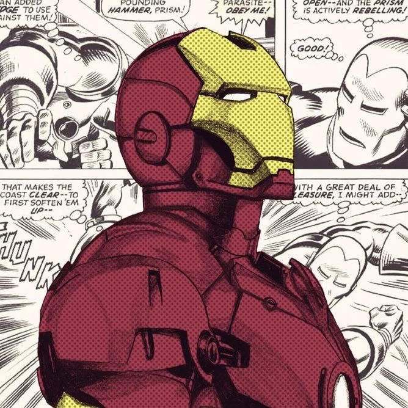

Meu primeiro post
Por: laureane M. Silva
Bem vindos!!! Esse é o meu blog amores, aqui eu trarei curiosidades sobre o nosso querido homem de ferro.
Vou compartilhar Curiosidades sobre o Homem de Ferro

Por: laureane M. Silva
Bem vindos!!! Esse é o meu blog amores, aqui eu trarei curiosidades sobre o nosso querido homem de ferro.
O Homem de Ferro, também conhecido como Tony Stark, é um dos super-heróis mais famosos da Marvel Comics. Ele foi criado pelos escritores Stan Lee, Larry Lieber, Don Heck e Jack Kirby, fazendo sua primeira aparição nos quadrinhos em 1963
Tony Stark é um inventor brilhante, engenheiro e empresário bilionário. Após sofrer um grave acidente e ser capturado por criminosos, ele constrói uma armadura tecnológica para salvar sua própria vida e escapar. Depois desse acontecimento, decide usar sua inteligência e suas invenções para proteger o mundo.